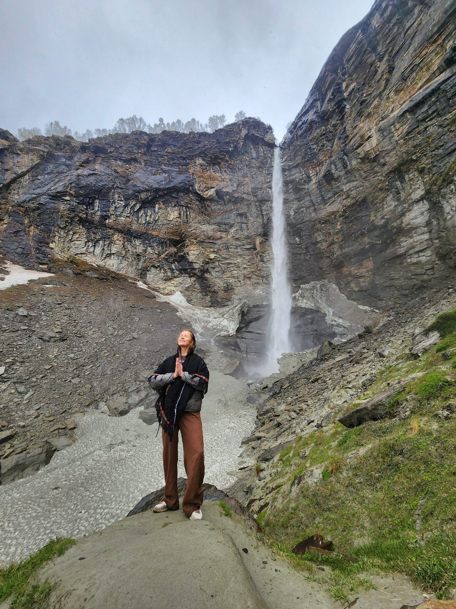
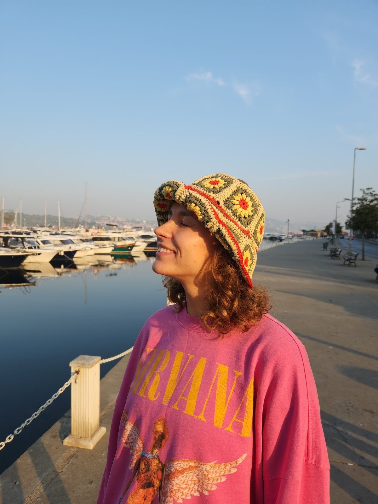
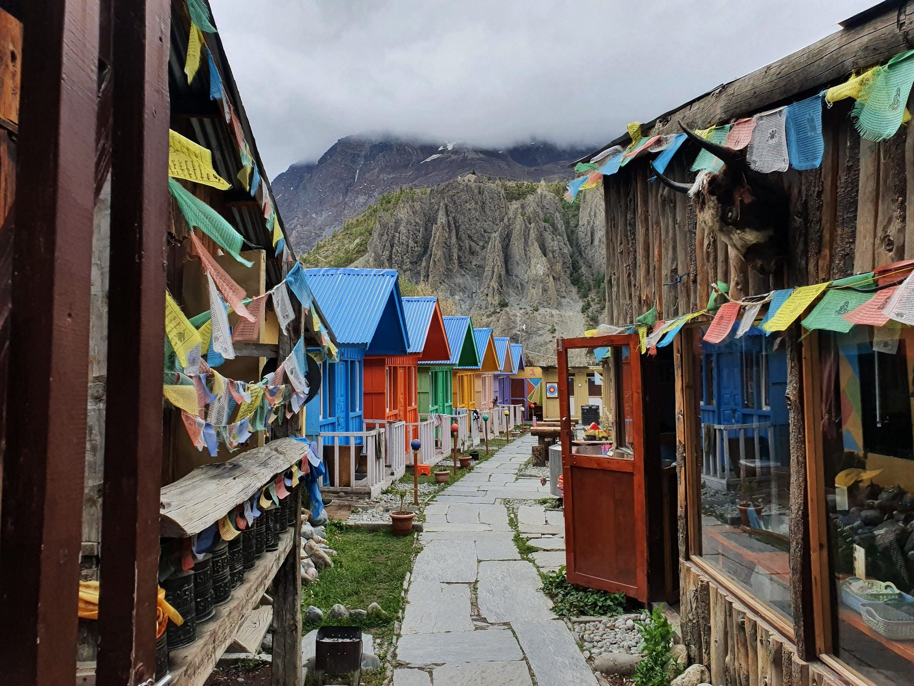
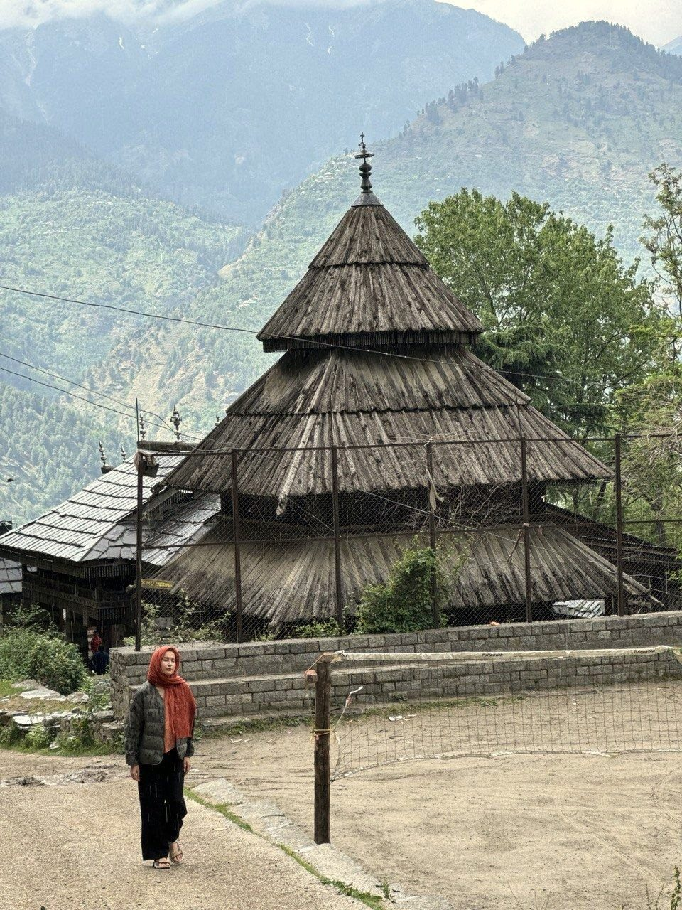
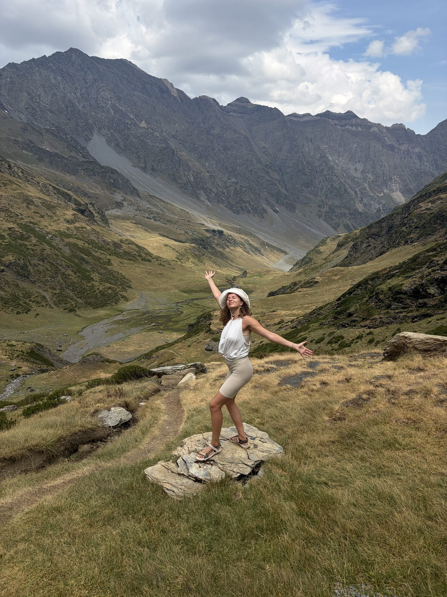

massage · reiki · yoga · Barcelona
A space where you can exhale and come back to yourself

Indian Himalayas,
2025
ABOUT ME
My name is
Alena!
Certified massage therapist · Reiki level II practitioner · 250+ hour yoga teacher
I help people feel their body again through touch, movement and energy.
I came to this work through my own experience of tension and fatigue, when I realised the body holds far more than we usually notice.

For me, massage, yoga and reiki are three keys to one process: reconnecting with yourself. Together we learn to hear what the body has long been trying to say.
Services
Massage
Working with the body through touch. We gently release tension, find tight spots and trigger points, and bring back a sense of lightness by attending to the areas that have been waiting for it.
Choose a focus: relaxation, lymphatic drainage or trigger zones.
Optional, by agreement:
- Tiger Warmer — a tool for warming the muscles
- Cupping
- Kinesio taping
- Bamboo sticks
Reiki
A practice of energetic balancing and deep relaxation. In a calm, trusting atmosphere it’s a way to slow down, be in silence and restore your resources.
How the session goes:
- Fully clothed
- Lying on the massage table
- Under a blanket if needed
Yoga
A practice of movement, breath and attention. My classes aren’t about complicated asanas but about hearing the body through movement, letting energy flow again and returning to your natural rhythm.
Format: individual or group class.
Optional, by agreement:
- Extended breathwork block
- Myofascial release with roller and ball
Everything starts with a short conversation about what you feel in your body right now and what you’d like from the session. Together we choose the gentlest place to begin.
Massage
Working with the body through touch. We gently release tension, find tight spots and trigger points, and bring back a sense of lightness by attending to the areas that have been waiting for it.
Choose a focus: relaxation, lymphatic drainage or trigger zones.
Optional, by agreement:
- Tiger Warmer — a tool for warming the muscles
- Cupping
- Kinesio taping
- Bamboo sticks
Reiki
A practice of energetic balancing and deep relaxation. In a calm, trusting atmosphere it’s a way to slow down, be in silence and restore your resources.
How the session goes:
- Fully clothed
- Lying on the massage table
- Under a blanket if needed
Yoga
A practice of movement, breath and attention. My classes aren’t about complicated asanas but about hearing the body through movement, letting energy flow again and returning to your natural rhythm.
Format: individual or group class.
Optional, by agreement:
- Extended breathwork block
- Myofascial release with roller and ball

Nepal, 2022
“Within you, as within me, there is a quiet sanctuary to which you can retreat at any hour and feel at home”
Experience
Training and certified qualifications
Behind my practice is training at schools in Barcelona and Moscow. Every discipline is backed by certificates.
Massage
Trigger points: lumbosacral area and lower limbs
ISMET, Barcelona
2026
Trigger points: shoulder girdle and upper limbs
ISMET, Barcelona
2025
Anti-cellulite and lymphatic drainage massage
Sculptor Massage Studio, Barcelona
2025
Chiromassage 360
INSTENAT, Barcelona
2025
Yumeiho massage
Yumeiho Centre, Moscow
2025
Classic massage
Moscow School of Massage
2024
Also trained in:
French sculpting facial massage · ARAVIA Professional, Moscow · 2025
Jacquet facial massage and darsonval therapy · ARAVIA Professional, Moscow · 2025
Reiki
Reiki Level 2 · Okuden (Usui Reiki Ryoho)
KISETSU School, Barcelona
2025
Reiki Level 1 · Shoden (Usui Reiki Ryoho)
KISETSU School, Barcelona
2025
Yoga
Yoga teacher, 250+ hours
Kaula Yoga School, Moscow
2022–2023
Certificates
Reviews
Thank you for your trust :)
There is always an answer within the body
It speaks to us through inner sensations. When we think about something that worries us, or face a choice we can’t make, the body responds. This exchange is quiet but honest.

Tripura Sundari Temple,
India, 2025
We’re used to looking for answers in our thoughts. But often the body already knows, and we don’t hear it — because somewhere we’re overstrained, haven’t rested in a long time, have ignored its signals or lost touch with ourselves.
FAQ
Yes, and that’s very common. You don’t need any experience — just the wish to give your body some attention. We’ll start with a short conversation and decide together which practice suits you if you’re not sure where to begin.
You can trust your body: massage when you want to relax and have tension released by hand; yoga when you’re drawn to gentle movement and breathing; reiki when you feel drained and long for quiet. If you’re unsure, write to me and I’ll help you choose.
I work in several studios across Barcelona. Write to me — we’ll pick the place that’s most convenient and closest to you, and I’ll send you current prices and availability.
Russian, Spanish or English — whichever you prefer.
For yoga and reiki, comfortable clothes you can move and lie down in (reiki is done fully clothed). For massage you undress only as far as you feel comfortable; your body stays covered except for the area we’re working on. Your boundaries come first.
Sessions last 30 to 90 minutes depending on the practice. Regularity matters more than intensity: many people like a rhythm of once every 1–2 weeks, but it depends on how you feel and what you need.
Of course. Just let me know at least 24 hours in advance.
It varies: warmth, a light pulsing, deep relaxation, sometimes drowsiness or an emotional release. Many people leave more rested, lighter and calmer. Over the next day or two the body may keep letting go of tension — that’s normal, and I’ll suggest how to support your body at home.
No. Reiki isn’t connected to any religion and doesn’t require you to believe in anything. It’s a gentle practice for slowing down and restoring energy. I explain everything calmly and clearly, without unnecessary esoterics.
No. My practices are about care, attention and reconnecting with your body — not diagnosis or treatment. They complement medical care well but don’t replace it. If you have a medical condition or are pregnant, let me know in advance so I can adapt the session.
Booking
If you feel your body needs attention right now — write to me.
Together we’ll find what resonates with how you feel. I’m here if you want to come back to your body gently, without rushing.

French Pyrenees,
2026